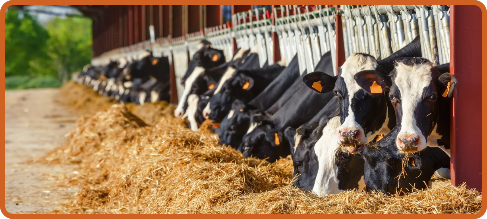
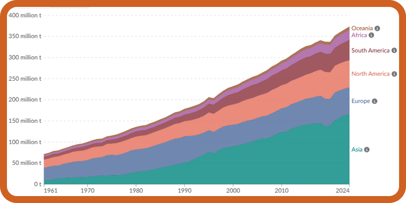

Produção de carne e Laticínios
Alimentar o mundo de forma sustentável é uma das principais dificuldades nas próximas décadas. E a carne desempenha um papel fundamental nisso. A carne é uma das mais importantes fontes de alimento em todo o mundo, a demanda global por carne está crescendo cada vez mais. Nos últimos 50 anos, a produção dessa proteína mais do que triplicou, atualmente é produzido uma média de 350 milhões de toneladas por ano!

-
Porém, a alta produção de carne traz muitos problemas ambientais, e um dos maiores desafios é continuar produzindo carne e produtos laticínios buscando reduzir esse impacto. Uma de suas possíveis soluções é fazer uma troca por peixe e frutos do mar, que é uma outra ótima fonte de proteína. Regionalmente, a Ásia agora ocupa a posição de ser o maior produtor de carne, contribuindo com uma parcela substancial da produção global total de carne
-
No início da década de 1960, a Europa e a América do Norte eram as principais regiões produtoras de carne. No entanto, no início do século XXI, sua participação combinada havia diminuído notavelmente, com a Ásia emergindo como a região predominante em termos de produção de carne.
Produção Global
1961 - 2024

Impactos Ambientais
-
A produção pecuária é responsável por 14 a 18% das emissões globais de gases de efeito estufa, incluindo 32% das emissões de metano em todo o mundo.
-
Mais de dois terços de todas as terras agrícolas são dedicadas ao cultivo de ração para o gado, enquanto apenas 8% são utilizadas para o cultivo de alimentos para consumo humano direto.
-
Globalmente, a agricultura ocupa cerca de metade das terras habitáveis do mundo, e quase 80% dessas terras agrícolas são dedicadas à pecuária.
-
A carne bovina e outras carnes de ruminantes (como cordeiro, cabra e búfalo) têm a maior pegada ambiental. Os ruminantes são um tipo de animal com um sistema digestivo de quatro câmaras que lhes permite digerir plantas fibrosas e resistentes, como gramíneas, produzindo metano como subproduto.
Organização da FAO para Combate de doenças transfronteiriças
A FAO, orientada por diversos países, propuseram um plano para o combate às doenças transfronteiriças. Na qual se não controladas, essas doenças podem prejudicar rapidamente os meios de estabilidade e comércio, atingir de forma mais preocupante os países de baixa e média renda e se espalhar para as populações humanas com consequências devastadoras.
O diretor-geral da FAO observou que as doenças animais transfronteiriças (TADs) continuam sendo uma das ameaças mais urgentes à segurança alimentar global, meios de subsistência e saúde. Problemas de gripe aviária altamente patogênica, febre aftosa, Peste suína africana, e Novo Mundo screwworm, entre outros, demonstram que os TADs “estão se espalhando mais rápido, além e com maior impacto nas economias e meios de subsistência do que nunca”, disse ele.
Enfatizando que a prevenção custa muito menos que a inação, os membros da FAO reconheceram a importância crítica de prevenir, detectar e responder à disseminação de TADs e enviaram uma forte mensagem para garantir que o trabalho da FAO tenha recursos adequados.